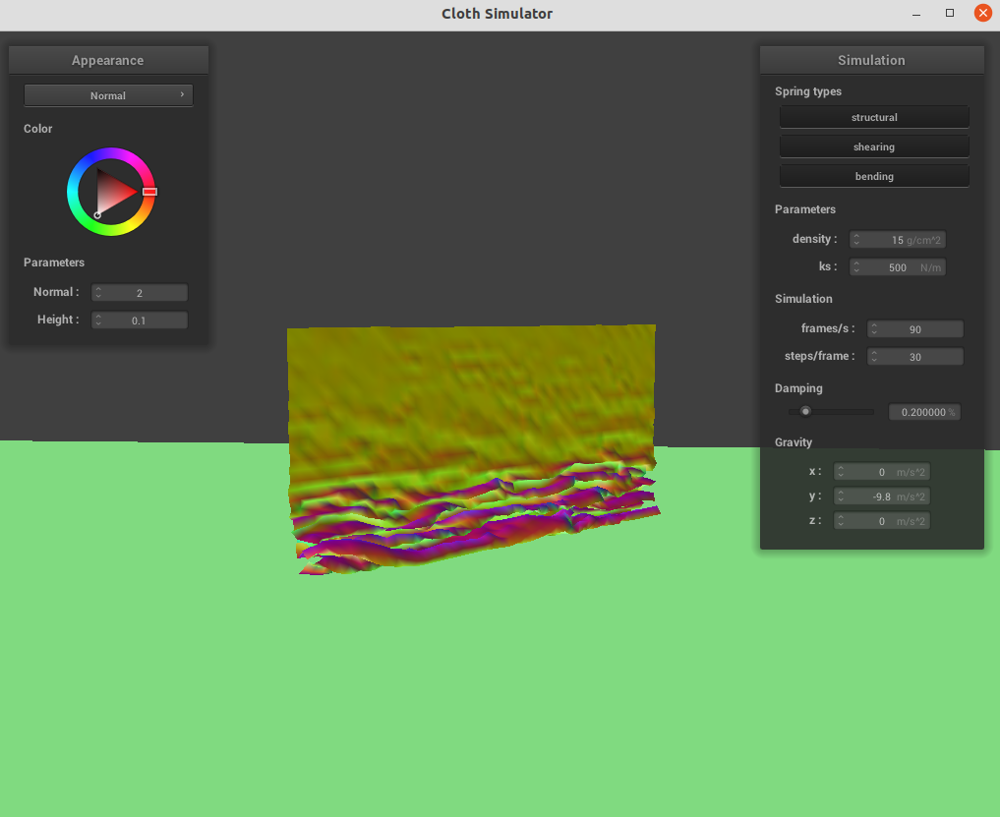

Overview
In this assignment, we implemented a real-time simulation of cloth using a point mass and spring based system. This is done by using Verlet integration (in Part II), and computing collision of point masses with other primitives in the scene (Part III) and other point masses in the cloth (Part IV). In Part V, we wrote shaders in GLSL.
Part I: Masses and springs
Building point masses
We first calculate the interval of the different point masses
x_interval = width / num_width_points;
y_interval = height / num_height_points;
before placing the grid of masses according to the x and y interval. We use y to iterate through num_height_points, and x to iterate through num_width_points. If the orientation is horizontal, the calculated position for the point mass is
(x * x_interval, 1, y * y_interval)Otherwise, the point mass is placed at
(x * x_interval, y * y_interval, -0.001 + static_cast<double>(rand()) / RAND_MAX * 0.002)We iterate through
pinned using std::find to see whether it contains {x, y}. If it does, we set the point mass's pinned boolean to true, and false otherwise. Building springs
We iterate throughpoint_masses and find the 2D grid index for every point mass. For each type of string, we compute the 2D index of the other endpoint of the string and check whether it is within the grid. If it does, we add a string of that type between them and place it onto the strings vector. |
|
|
|
|
|
Part II: Simulation via numerical integration
Compute total force acting on each point mass
We first compute the total external acceleration by adding all elements in external_accelerations before
multiplying it by mass to obtain the total external force. Then we apply this external force to every point mass.
Next, we iterate through strings and use Hooke's law to compute the tension inside the string. \[F_S = k_s * (||p_a - p_b|| - l)\] For each type of string, we check whether that type of constraint is enabled, and only add the force to the point masses when it is. For bending constraints, we multiply 0.2 to ks.
Use Verlet integration to compute new point mass positions
We follow the formula given in the spec when doing position updates to unpinned point masses \[x_{t + dt} = x_t + (1 - d) * (x_t - x_{t-dt}) + a_t * dt^2\] If the point mass is pinned, we do nothing.Constrain position updates
For each spring insprings, we check the distance between the point masses on the two endpoints. If it is larger than 1.1 * rest_length, we modify the positions of the points while maintaining the relative direction between them such that the distance between them gets no larger than 1.1 * rest_length. If both of them are unpinned, we perform half of the correction to each point mass. If one of them is pinned, we apply the correction to the other.
Analysis of different parameters
Different ks

|
|
|
Different density
|
|
|
|
Different damping
|
|
|
|
Default state of pinned4.json
Part III: Simulation via numerical integration
Collisions with spheres
We first compute the distance between the point mass and the origin of the sphere. The point mass intersects with or is inside the sphere if the distance is smaller or equal to the radius of the sphere. In this case, we compute the tangent point
tangent_point = origin + radius * (pm.position - origin).unit();the correction vector
correction = tangent_point - pm.last_position;and the updated position of the point mass is
pm.position = pm.last_position + (1 - friction) * correctionThe screenshots of the shaded cloth with different show that a lower ks causes the cloth to looks softer, while with a high ks the cloth tends to be harder to bend.
|
|
|
|
Collisions with planes
We determine whether a point is above, below or inside a plane by computing the dot product of the normal of the plane and the vector pointing from the point to an arbitrary point on the plane. If the result is 0, then the point is inside the plane. A positive result and a negative result represent for different sides of the plane.In this way, we can tell that the point mass goes across the plane if computed results of its last position and the current position have different signs. If either of them is zero, we also consider the point mass to be crossing over the plane and apply corrections to it.
We compute the position of the tangent point using the formula for plane-line intersection:
tangent_point = pm.last_position + (pm.position - pm.last_position) * (dot(point - pm.last_position, normal) / dot(pm.position - pm.last_position, normal));then we provide it with a small constant
SURFACE_OFFSET to move it off the plane, which would be on the same side of the plane that the point mass was before crossing over. Finally, we update the point mass's position by computing the correction, scale it by \(1-f\), and add it to its last position.
Part IV: Handling self-collisions
Compute hash according to position
Given \(w, h, t\) in the spec, we compute the 3D coordinate of a point mass by
int x = pos.x / w, y = pos.y / h, z = pos.z / t;and use (x, y, z) as the coordinate. We combine them into a integer and use it as the hash by shifting the bits of x and y:
float hash = (x << 20) | (y << 10) | z;Building spatial map
We iterate throughpoint_masses, and compute the hash of each point mass, then use the hash as the key in the map and add it to the corresponding vector (i.e. *map[hash]).
Self collision
We compute the hash of the point mass, and iterate through*map[hash] to search for candidates that the point mass may collide into. If the distance between two point masses gets smaller than 2 * thickness, we compute a correction vector (2 * thickness - dist) * (pm.position - candidate->position).unit() and store it. After the iteration finishes, we take the average of the correction vectors and scale it down by simulation_steps to derive the final correction.
Results
|
|
|
|
Analysis
With a low density, there are less folds when the cloth falls down, and the folds are more distant to each other. With a high density, there are many folds which are really close to each other.|
|
|
|
|

|
|
|
Part V: Cloth Sim
Shader Programs
Shaders are isolated programs that run in parallel on GPU that can execute sections of the graphics pipeline. A shader program takes in inputs and output a single 4 dimensional vector.A vertex shader modify properties of vertices. It involves modifying their position vectors, normal vectors, as well as their uv coordinates in the texture, which are the inputs for the fragment shader. It can also write the position of a vertex to
gl_Position. A fragment shader takes in the outputs of the vertex shader, which are the geometric attributes of the fragment, to compute and write a color into the output.
Blinn-Phong shading model
The Blinn-Phong shading model consists of three components: amibient lighting, diffuse reflection and specular highlights. Ambient shading is the shading that does not depend on anything. It adds a constant color to account for disregarded illumination and fill in black shadows. Diffuse reflection scatters light uniformly in all directions. The result of specular shading depends on view direction. More light are reflected near mirror reflection direction.For the selection of parameters, we use \[k_a = 0.01, Ia = vec3(1, 1, 1), k_d = 1, ks = 0.5, p = 32\]
|
|
|
|
|
|
Texture mapping
The texture shader uses the color sampled from the texture at the texture space coordinateuv as the output color. We use texture_4.png as the texture.
|
|
Bump mapping and displacement mapping
In bump mapping, we modify the normal vectors of an object so that the fragment shader gives the illusion of detail (such as bumps) on an object.

|
-o 16 -a 16 |
-o 16 -a 16 |
-o 128 -a 128 |
-o 128 -a 128 |
Environment-mapped Reflections
In the mirror shader, we take the incoming eye-ray, reflect it across the surface normal to get the outgoing direction, and then sample the environment for that direction's incoming radiance.|
|